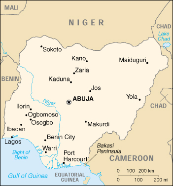

![[Country Flag of Nigeria]](../flags/ni-lgflag.jpg)
| Nigeria |
|
         |  | |
| Introduction |
Background: Following nearly 16 years of military rule, a new constitution was adopted in 1999 and a peaceful transition to civilian government completed. The new president faces the daunting task of rebuilding a petroleum-based economy, whose revenues have been squandered through corruption and mismanagement, and institutionalizing democracy. In addition, the OBASANJO administration must defuse longstanding ethnic and religious tensions, if it is to build a sound foundation for economic growth and political stability.
| Geography |
Location: Western Africa, bordering the Gulf of Guinea, between Benin and Cameroon
Geographic coordinates: 10 00 N, 8 00 E
Map references: Africa
Area:
total:
923,768 sq km
land:
910,768 sq km
water:
13,000 sq km
Area - comparative: slightly more than twice the size of California
Land boundaries:
total:
4,047 km
border countries:
Benin 773 km, Cameroon 1,690 km, Chad 87 km, Niger 1,497 km
Coastline: 853 km
Maritime claims:
continental shelf:
200-m depth or to the depth of exploitation
exclusive economic zone:
200 nm
territorial sea:
12 nm
Climate: varies; equatorial in south, tropical in center, arid in north
Terrain: southern lowlands merge into central hills and plateaus; mountains in southeast, plains in north
Elevation extremes:
lowest point:
Atlantic Ocean 0 m
highest point:
Chappal Waddi 2,419 m
Natural resources: petroleum, tin, columbite, iron ore, coal, limestone, lead, zinc, natural gas, hydropower, arable land
Land use:
arable land:
33%
permanent crops:
3%
permanent pastures:
44%
forests and woodland:
12%
other:
8% (1993 est.)
Irrigated land: 9,570 sq km (1993 est.)
Natural hazards: periodic droughts
Environment - current issues: soil degradation; rapid deforestation; desertification; recent droughts in north severely affecting marginal agricultural activities
Environment - international agreements:
party to:
Biodiversity, Climate Change, Desertification, Endangered Species, Hazardous Wastes, Law of the Sea, Marine Dumping, Marine Life Conservation, Nuclear Test Ban, Ozone Layer Protection
signed, but not ratified:
none of the selected agreements
| People |
Population:
123,337,822
note:
estimates for this country explicitly take into account the effects of excess mortality due to AIDS; this can result in lower life expectancy, higher infant mortality and death rates, lower population and growth rates, and changes in the distribution of population by age and sex than would otherwise be expected (July 2000 est.)
Age structure:
0-14 years:
44% (male 27,181,020; female 26,872,317)
15-64 years:
53% (male 33,495,794; female 32,337,193)
65 years and over:
3% (male 1,729,149; female 1,722,349) (2000 est.)
Population growth rate: 2.67% (2000 est.)
Birth rate: 40.16 births/1,000 population (2000 est.)
Death rate: 13.72 deaths/1,000 population (2000 est.)
Net migration rate: 0.28 migrant(s)/1,000 population (2000 est.)
Sex ratio:
at birth:
1.03 male(s)/female
under 15 years:
1.01 male(s)/female
15-64 years:
1.04 male(s)/female
65 years and over:
1 male(s)/female
total population:
1.02 male(s)/female (2000 est.)
Infant mortality rate: 74.18 deaths/1,000 live births (2000 est.)
Life expectancy at birth:
total population:
51.56 years
male:
51.58 years
female:
51.55 years (2000 est.)
Total fertility rate: 5.66 children born/woman (2000 est.)
Nationality:
noun:
Nigerian(s)
adjective:
Nigerian
Ethnic groups: Nigeria, which is Africa's most populous country, is composed of more than 250 ethnic groups; the following are the most populous and politically influential: Hausa and Fulani 29%, Yoruba 21%, Igbo (Ibo) 18%, Ijaw 10%, Kanuri 4%, Ibibio 3.5%, Tiv 2.5%
Religions: Muslim 50%, Christian 40%, indigenous beliefs 10%
Languages: English (official), Hausa, Yoruba, Igbo (Ibo), Fulani
Literacy:
definition:
age 15 and over can read and write
total population:
57.1%
male:
67.3%
female:
47.3% (1995 est.)
| Government |
Country name:
conventional long form:
Federal Republic of Nigeria
conventional short form:
Nigeria
Data code: NI
Government type: republic transitioning from military to civilian rule
Capital:
Abuja
note:
on 12 December 1991 the capital was officially moved from Lagos to Abuja; many government offices remain in Lagos pending completion of facilities in Abuja
Administrative divisions: 36 states and 1 territory*; Abia, Abuja Federal Capital Territory*, Adamawa, Akwa Ibom, Anambra, Bauchi, Bayelsa, Benue, Borno, Cross River, Delta, Ebonyi, Edo, Ekiti, Enugu, Gombe, Imo, Jigawa, Kaduna, Kano, Katsina, Kebbi, Kogi, Kwara, Lagos, Nassarawa, Niger, Ogun, Ondo, Osun, Oyo, Plateau, Rivers, Sokoto, Taraba, Yobe, Zamfara
Independence: 1 October 1960 (from UK)
National holiday: Independence Day, 1 October (1960)
Constitution: NA 1999 new constitution adopted
Legal system: based on English common law, Islamic law, and tribal law
Suffrage: 18 years of age; universal
Executive branch:
chief of state:
President Olusegun OBASANJO (since 29 May 1999); note - the president is both the chief of state and head of government
head of government:
President Olusegun OBASANJO (since 29 May 1999); note - the president is both the chief of state and head of government
cabinet:
Federal Executive Council
elections:
president is elected by popular vote for no more than two four-year terms; election last held 27 February 1999 (next to be held NA 2003)
election results:
Olusegun OBASANJO (PDP) elected president; percent of vote - Olusegun OBASANJO 62.8%, Olu FALAE (APP-AD) 37.2%
Legislative branch:
bicameral National Assembly consists of Senate (109 seats, three from each state and one from the Federal Capital Territory; members elected by popular vote to serve four-year terms) and House of Representatives (360 seats, members elected by popular vote to serve four-year terms)
elections:
Senate - last held 20-24 February 1999 (next to be held NA 2003); House of Representatives - last held 20-24 February 1999 (next to be held NA 2003)
election results:
Senate - percent of vote by party - PDP 58%, APP 23%, AD 19%; seats by party - PDP 65, APP 24, AD 20; House of Representatives - percent of vote by party - PDP 58%, APP 30%, AD 12%; seats by party - PDP 215, APP 75, AD 70
Judicial branch: Supreme Court, judges appointed by the Provisional Ruling Council; Federal Court of Appeal, judges are appointed by the federal government on the advice of the Advisory Judicial Committee
Political parties and leaders: All People's Party or APP [Alhaji Yusuf ALI]; Alliance for Democracy or AD [Yusuf MAMMAN]; People's Democratic Party or PDP [Barnabas GEMADE]
International organization participation: ACP, AfDB, C, CCC, ECA, ECOWAS, FAO, G-15, G-19, G-24, G-77, IAEA, IBRD, ICAO, ICC, ICRM, IDA, IFAD, IFC, IFRCS, IHO, ILO, IMF, IMO, Inmarsat, Intelsat, Interpol, IOC, ISO, ITU, MINURSO, NAM, OAU, OPCW, OPEC, PCA, UN, UNCTAD, UNESCO, UNHCR, UNIDO, UNIKOM, UNITAR, UNMIBH, UNMIK, UNMOP, UNMOT, UNU, UPU, WCL, WFTU, WHO, WIPO, WMO, WToO, WTrO
Diplomatic representation in the US:
chief of mission:
Ambassador Jibril AMINU
chancery:
1333 16th Street NW, Washington, DC 20036
telephone:
[1] (202) 986-8400
FAX:
[1] (202) 775-1385
consulate(s) general:
Atlanta and New York
Diplomatic representation from the US:
chief of mission:
Ambassador William H. TWADDELL
embassy:
2 Walter Carrington Crescent, Lagos
mailing address:
P. O. Box 554, Lagos
telephone:
[234] (1) 261-0097
FAX:
[234] (1) 261-0257
Flag description: three equal vertical bands of green (hoist side), white, and green
| Economy |
Economy - overview: The oil-rich Nigerian economy, long hobbled by political instability, corruption, and poor macroeconomic management, is undergoing substantial economic reform under the new civilian administration. Nigeria's former military rulers failed to diversify the economy away from overdependence on the capital-intensive oil sector, which provides 20% of GDP, 95% of foreign exchange earnings, and about 65% of budgetary revenues. The largely subsistence agricultural sector has not kept up with rapid population growth, and Nigeria, once a large net exporter of food, now must import food. In 2000, Nigeria is likely to receive a debt-restructuring deal with the Paris club and a $1 billion loan from the IMF, both contingent on economic reforms. Increased foreign investment combined with high world oil prices should push growth to over 5% in 2000-01.
GDP: purchasing power parity - $110.5 billion (1999 est.)
GDP - real growth rate: 2.7% (1999 est.)
GDP - per capita: purchasing power parity - $970 (1999 est.)
GDP - composition by sector:
agriculture:
33%
industry:
42%
services:
25% (1997 est.)
Population below poverty line: 34.1% (1992-93 est.)
Household income or consumption by percentage share:
lowest 10%:
1.3%
highest 10%:
31.4% (1992-93)
Inflation rate (consumer prices): 12.5% (1999 est.)
Labor force: 42.844 million
Labor force - by occupation: agriculture 54%, industry 6%, services 40% (1999 est.)
Unemployment rate: 28% (1992 est.)
Budget:
revenues:
$NA
expenditures:
$NA, including capital expenditures of $NA
Industries: crude oil, coal, tin, columbite, palm oil, peanuts, cotton, rubber, wood, hides and skins, textiles, cement and other construction materials, food products, footwear, chemicals, fertilizer, printing, ceramics, steel
Industrial production growth rate: NA%
Electricity - production: 14.75 billion kWh (1998)
Electricity - production by source:
fossil fuel:
61.69%
hydro:
38.31%
nuclear:
0%
other:
0% (1998)
Electricity - consumption: 13.717 billion kWh (1998)
Electricity - exports: 0 kWh (1998)
Electricity - imports: 0 kWh (1998)
Agriculture - products: cocoa, peanuts, palm oil, corn, rice, sorghum, millet, cassava (tapioca), yams, rubber; cattle, sheep, goats, pigs; timber; fish
Exports: $13.1 billion (f.o.b., 1999)
Exports - commodities: petroleum and petroleum products 95%, cocoa, rubber
Exports - partners: US 35%, Spain 11%, India 9%, France 6%, Italy (1998 est.)
Imports: $10 billion (f.o.b., 1999)
Imports - commodities: machinery, chemicals, transport equipment, manufactured goods, food and live animals
Imports - partners: UK 13%, US 12%, Germany 10%, France 9%, Netherlands (1998 est.)
Debt - external: $29 billion (1999 est.)
Economic aid - recipient: $39.2 million (1995)
Currency: 1 naira (N) = 100 kobo
Exchange rates: nairas (N) per US$1 - 96.261 (October 1999), 99 (1999), 21.886 (1998), 21.886 (1997), 21.895 (1995)
Fiscal year: calendar year
| Communications |
Telephones - main lines in use: 405,000 (1995)
Telephones - mobile cellular: 10,000 (1999)
Telephone system:
an inadequate system, further limited by poor maintenance; major expansion is required and a start has been made
domestic:
intercity traffic is carried by coaxial cable, microwave radio relay, a domestic communications satellite system with 19 earth stations, and a coastal submarine cable; mobile cellular facilities and the Internet are available
international:
satellite earth stations - 3 Intelsat (2 Atlantic Ocean and 1 Indian Ocean); coaxial submarine cable SAFE (South African Far East)
Radio broadcast stations: AM 82, FM 35, shortwave 11 (1998)
Radios: 23.5 million (1997)
Television broadcast stations: 2 government-controlled; note - in addition, in 1993, 14 licenses to operate private television stations were granted (1999)
Televisions: 6.9 million (1997)
Internet Service Providers (ISPs): 5 (1999)
| Transportation |
Railways:
total:
3,557 km
narrow gauge:
3,505 km 1.067-m gauge
standard gauge:
52 km 1.435-m gauge
note:
years of neglect of both the rolling stock and the right-of-way have seriously reduced the capacity and utility of the system; a project to restore Nigeria's railways is now underway
Highways:
total:
194,394 km
paved:
60,068 km (including 1,194 km of expressways)
unpaved:
134,326 km (1998 est.)
note:
many of the roads reported as paved may be graveled; because of poor maintenance and years of heavy freight traffic (in part the result of the failure of the railroad system), much of the road system is barely usable
Waterways: 8,575 km consisting of the Niger and Benue rivers and smaller rivers and creeks
Pipelines: crude oil 2,042 km; petroleum products 3,000 km; natural gas 500 km
Ports and harbors: Calabar, Lagos, Onne, Port Harcourt, Sapele, Warri
Merchant marine:
total:
40 ships (1,000 GRT or over) totaling 360,505 GRT/644,471 DWT
ships by type:
bulk 1, cargo 12, chemical tanker 4, petroleum tanker 22, specialized tanker 1 (1999 est.)
Airports: 71 (1999 est.)
Airports - with paved runways:
total:
37
over 3,047 m:
7
2,438 to 3,047 m:
10
1,524 to 2,437 m:
10
914 to 1,523 m:
8
under 914 m:
2 (1999 est.)
Airports - with unpaved runways:
total:
34
1,524 to 2,437 m:
1
914 to 1,523 m:
15
under 914 m:
18 (1999 est.)
Heliports: 1 (1999 est.)
| Military |
Military branches: Army, Navy, Air Force, Police Force
Military manpower - military age: 18 years of age
Military manpower - availability:
males age 15-49:
29,082,802 (2000 est.)
Military manpower - fit for military service:
males age 15-49:
16,708,344 (2000 est.)
Military manpower - reaching military age annually:
males:
1,360,023 (2000 est.)
Military expenditures - dollar figure: $236 million (FY99)
Military expenditures - percent of GDP: 0.7% (FY99)
| Transnational Issues |
Disputes - international: delimitation of international boundaries in the vicinity of Lake Chad, the lack of which led to border incidents in the past, has been completed and awaits ratification by Cameroon, Chad, Niger, and Nigeria; dispute with Cameroon over land and maritime boundaries around the Bakasi Peninsula is currently before the ICJ; maritime boundary dispute with Equatorial Guinea because of disputed jurisdiction over oil-rich areas in the Gulf of Guinea
Illicit drugs: facilitates movement of heroin en route from Southeast and Southwest Asia to Western Europe and North America; increasingly a transit route for cocaine from South America intended for European, East Asian, and North American markets